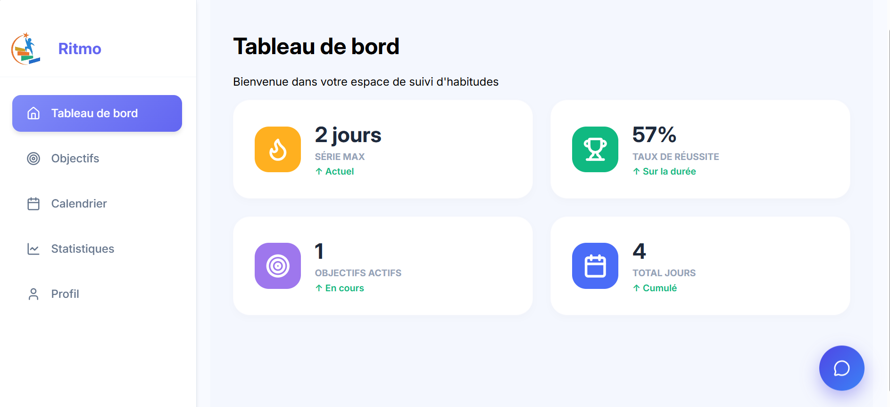

DisciplineHub – Ritmo
Ritmo est une solution digitale conçue pour aider les particuliers, étudiants, entrepreneurs et entreprises à mieux définir, organiser et atteindre leurs objectifs.
Fonctionnalités
- Création et gestion d'objectifs
- Suivi de progression
- Statistiques et pourcentage de réalisation
- Calendrier et suivi des objectifs actifs
- Visualisation des données
Certaines fonctionnalités d'intelligence artificielle sont envisagées mais ne sont pas encore intégrées à l'application.